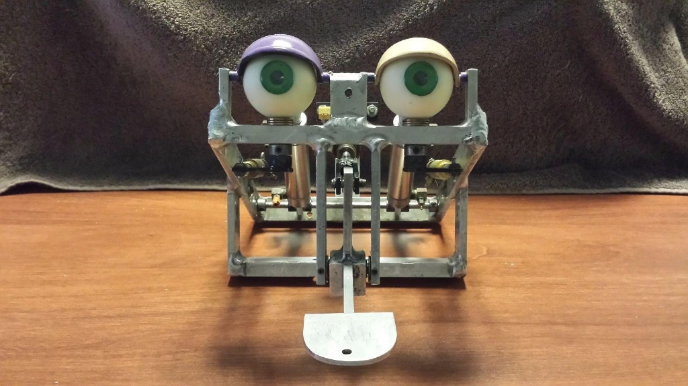

A look at the robots I’ve built at home and at school—starting with a five-foot humanoid built from wood, PVC, and LEGO Mindstorms, and evolving into a fully 3D-printed animatronic head and VEX V5 competition machines.
Independent Builds
The Zainiac Series: 19, 21 & 25
Three generations of homemade robots and animatronics
2019 – 2025
I built Zainiac 19 in 2019 using materials I could work with by hand alongside early 3D-printed parts and a LEGO Mindstorms brain. Over the years, each new version taught me something different about linkages, structural rigidity, and how to get smooth motion out of simple motors. Select a generation below to see how the design changed from a five-foot full-body robot to an animatronic head.
Mechanical Layout — Zainiac 25 Animatronic HeadEntirely 3D Printed • 7 Servos & Linkage Arms • Black Eyelids

This is what my robot was based on: a head of an animatronic from the 1980s that used pneumatics as they were cheap and easy to set up. Mine was entirely 3D printed, and used servo motors for movement and linkage arms as opposed to pneumatic cylinders.
Translating 1980s Pneumatics into 3D-Printed Linkages
Zainiac 25 is an animatronic head based on Creative Engineering’s classic 1980s head geometry, adapted so the entire structure could be 3D printed at home and driven by hobby servos rather than compressed air:
Entirely 3D Printed: All frame struts, eye gimbals, black eyelids, and jaw brackets were 3D printed.
Two Servos at the Base of the Neck: Handle head pitch and tilt through mechanical linkage arms.
Two Servos per Eye (Four Total): Move each eye independently beneath black eyelids.
One Jaw Servo: Drives the linkage arm connected to the hinged lower jaw.
Design Origin
1980s Animatronic Head
Fabrication
Entirely 3D Printed
Actuation
Servos & Linkage Arms
Servo Layout
2 Neck • 4 Eye • 1 Jaw
Where I’ve Brought These Robots
Showing the Zainiac robots at Maker Faires let me test them in front of thousands of people and talk with other builders.
Brussels Maker Faire — Belgium
Featured on Belgian national television news after exhibiting Zainiac 19, and invited to take part in the official opening ceremony alongside Brussels government leadership.
Philadelphia Maker Faire
Live demonstrations and public Q&A on homemade robotics fabrication.
Rochester Maker Faire
Hands-on robotics showcase with regional makers and students.
Cairo Maker Faire — Egypt
International robotics exhibition and youth engineering exchange.
Tandem Conference — Jefferson University
Presented independent robotics work at an industrial design and engineering conference.
Princeton Day School
VEX V5 Robotics
Co-President
I serve as Co-President of the Princeton Day School Robotics Club (2025–Present) after leading the build effort as Head of the Design Team (2024–2025). We use Onshape CAD to prototype drivetrains, intakes, and gear ratios before cutting metal.
2026 Season: Tournament Quarterfinalist
February 2025 Competition: 6th Place overall out of 40+ teams
Smaller Builds & Community Relief
Little Bot, Noggin & N95 Masks
Alongside the Zainiac series, I built Little Bot and Noggin to experiment with smaller linkages, motor control, and compact packaging.
During the COVID-19 PPE shortage, I also 3D-printed N95 masks at home and donated them directly to a cancer center in New York—an experience I wrote about in my published article, “From COVID-19 to Zainiac 19.”